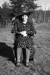

Anna Henrika Johansdotter Blombäck
Blev 66 år.
| Född: | 1855-01-09 Båtskärsnäs 1, Nederkalix sn. [1] | |
|---|
| Döpt: | 1855-01-11 Båtskärsnäs, Nederkalix sn. [2] | Föräldrar: Inhysesm. Johan Blombäck och Hustrun Mathilda Sjöberg i Båtskärsnäs. Vittnen: Drängen Johan Eriksson i Rolfs och dess Hustru Sara Greta Sjöberg; Drängen Nils Blombäck i Bastuguträsk och Pigan Lisa Greta Blombäck ibidem. |
|---|
| Levde: | 1859 Båtskärsnäs 1, Nederkalix sn. [3] | |
|---|
| Omflyttad från: | 1878-10-14 Båtskärsnäs, Nederkalix sn. [4] | |
|---|
| Död: | 1921-10-26 Kamlunge, Töre fs, Kalix sn. [5] | Åderförkalkning och hjärtfel. |
|---|
| Begravd: | 1921-11-06 Töre fs, Nederkalix sn. [5] | |
|---|
| Lysning: | 1878-09-08 Kamlunge, Nederkalix fs, Kalix sn. [6] | |
|---|
| Vigsel: | 1878-10-12 Kamlunge, Nederkalix fs, Kalix sn. [7] | |
|---|
| Levde Soldat: | 1890 Kamlunge, Nederkalix fs, Kalix sn. [8] | |
|---|
| Levde Soldat: | 1900 Kamlunge, Nederkalix fs, Kalix sn. [9] | |
|---|
| Levde: | 1908 Kamlunge, Nederkalix fs, Kalix sn. [10] | Förre jägarsoldat, Läg.ägare 1 |
|---|
| Levde: | 1909 Kamlunge, Töre fs, Kalix sn. [11] | |
|---|
| Levde: | 1920 Kamlunge, Töre fs, Kalix sn. [11] | F.d. soldat. Läg.ägare 1 |
|---|
Personhistoria
| Årtal | Ålder | Händelse |
|---|
| 1855 |
|
Födelse 1855-01-09 Båtskärsnäs 1, Nederkalix sn [1] |
| 1855 |
2 dagar |
Dop 1855-01-11 Båtskärsnäs, Nederkalix sn [2] |
| 1857 |
2 år |
Systern Mathilda Johansdotter Blombäck föds 1857-05-07 Båtskärsnäs, Nederkalix sn [12] |
| 1857 |
2 år |
Maken Erik Albert Kanon föds 1857-05-16 Kamlunge, Nederkalix fs, Kalix sn [13] |
| 1859 |
|
Levde 1859 Båtskärsnäs 1, Nederkalix sn [3] |
| 1864 |
9 år |
Brodern Johan Fredrik Blombäck föds 1864-09-28 Båtskärsnäs, Nederkalix sn [4] |
| 1868 |
13 år |
Brodern Josef Blombäck föds 1868-07-31 Båtskärsnäs, Nederkalix sn [4] |
| 1871 |
16 år |
Systern Josefina Blombäck föds 1871-10-28 Båtskärsnäs, Nederkalix sn [4] |
| 1878 |
23 år |
Lysning Erik Albert Kanon 1878-09-08 Kamlunge, Nederkalix fs, Kalix sn [6] |
| 1878 |
23 år |
Vigsel Erik Albert Kanon 1878-10-12 Kamlunge, Nederkalix fs, Kalix sn [7] |
| 1878 |
23 år |
Omflyttad från 1878-10-14 Båtskärsnäs, Nederkalix sn [4] |
| 1879 |
24 år |
Dottern Erika Eriksson föds 1879-06-24 Kamlunge, Nederkalix fs, Kalix sn [14] |
| 1881 |
26 år |
Dottern Hilda Maria Eriksson föds 1881-04-09 Kamlunge, Nederkalix fs, Kalix sn [14] |
| 1883 |
28 år |
Sonen Johan Albert Eriksson föds 1883-07-01 Kamlunge, Nederkalix fs, Kalix sn [14] |
| 1885 |
30 år |
Sonen Edvard Eriksson föds 1885-10-19 Kamlunge, Nederkalix fs, Kalix sn [14] |
| 1887 |
32 år |
Sonen Karl Eriksson föds 1887-12-25 Kamlunge, Nederkalix fs, Kalix sn [14] |
| 1890 |
|
Levde Soldat Erik Albert Kanon 1890 Kamlunge, Nederkalix fs, Kalix sn [8] |
| 1890 |
35 år |
Dottern Gerda Eriksson föds 1890-05-03 Kamlunge, Nederkalix fs, Kalix sn [15] |
| 1893 |
38 år |
Dottern Alma Viktoria Eriksson föds 1893-01-29 Kamlunge, Nederkalix fs, Kalix sn [16] |
| 1895 |
40 år |
Dottern Selma Eriksson föds 1895-04-29 Kamlunge, Nederkalix fs, Kalix sn [16] |
| 1895 |
40 år |
Dottern Alma Viktoria Eriksson dör 1895-07-04 Kamlunge, Nederkalix fs, Kalix sn [16] |
| 1898 |
43 år |
Dottern Alma Viktoria Eriksson föds 1898-07-11 Kamlunge, Nederkalix fs, Kalix sn [16] |
| 1900 |
|
Levde Soldat Erik Albert Kanon 1900 Kamlunge, Nederkalix fs, Kalix sn [9] |
| 1908 |
|
Levde Erik Albert Kanon 1908 Kamlunge, Nederkalix fs, Kalix sn [10] |
| 1909 |
|
Levde Erik Albert Kanon 1909 Kamlunge, Töre fs, Kalix sn [11] |
| 1920 |
|
Levde Erik Albert Kanon 1920 Kamlunge, Töre fs, Kalix sn [11] |
| 1921 |
66 år |
Död 1921-10-26 Kamlunge, Töre fs, Kalix sn [5] |
| 1921 |
|
Begravning 1921-11-06 Töre fs, Nederkalix sn [5] |
Källor
| [1] | Nederkalix fs C:6 1854-1857) fol. 234 k.8/10, AI:7B (1849-1859) fol. 403 k.4/6, AI:10A (1879-1890) fol. 148 r.16-23 |
| |
| | |
| [2] | Nederkalix fs C:6 1854-1857) fol. 234 k.8/10 |
| |
| | |
| [3] | Nederkalix AI:7B (1849-1859) fol. 403 |
| |
| | |
| [4] | Nederkalix AI:9B (1869-1878) fol. 444 |
| |
| | |
| [5] | Töre F:1 (1920-1925) 43/1921 fol. 93 k.3/3 |
| |
| | |
| [6] | Nederkalix E: |
| |
| | |
| [7] | Nederkalix HFL fol. 93 |
| |
| | |
| [8] | ANNO 1890 |
| |
| | |
| [9] | ANNO 1900 |
| |
| | |
| [10] | Nederkalix AIIA:2 (1900-1910) fol. 32 k.1/6 |
| |
| | |
| [11] | Töre AIIA:1B (1909-1920) fol. 548 k.5/6 |
| |
| | |
| [12] | Nederkalix fs AI:7B (1849-1859) fol. 403 k.4/6 |
| |
| | |
| [13] | Nederkalix fs C:6 (1857-1859) fol. 269 k.9/10, AI:7A (1849-1859) fol. 73, AI:10A (1879-1890) fol. 148 r.16-23 |
| |
| | |
| [14] | Nederkalix AI:10A fol. 148 r.16-23 |
| |
| | |
| [15] | Nederkalix C:8 1890/150 k.9/12,k AI:11A fol. 136, Mtl Stockholms stad och län 1971 |
| |
| | |
| [16] | Nederkalix AI:11A fol. 136 |
| |
|
 |
|
| |
|  |
| Anna Kanon, Kamlunge, Töre fs, Kalix sn. |
|

{kind=link}